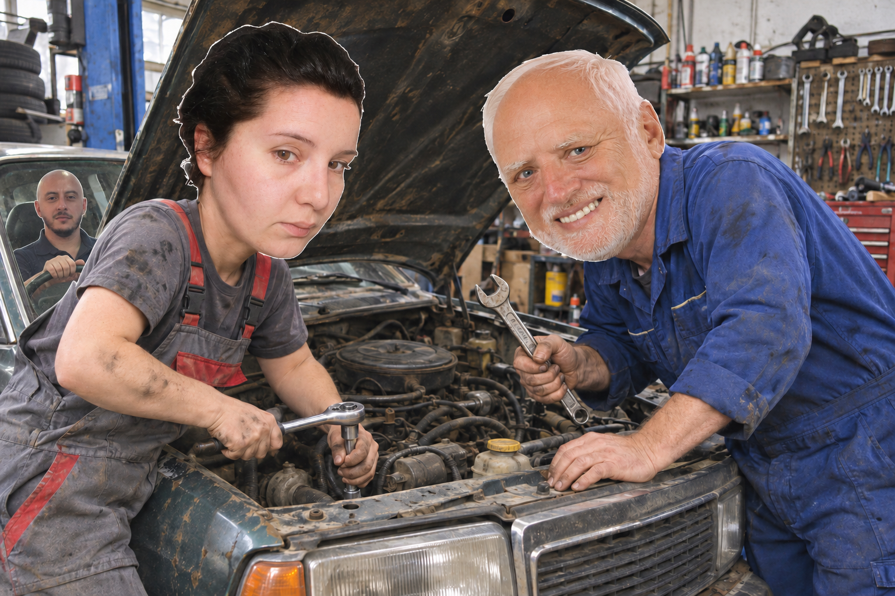

YENİ BİR İNTERNET TAKINTISI YÜKLENİYOR
Gereksiz bilgi.
Ciddi mesai.
Hayatında bir daha lazım olmayacak.
Yine de bilmek isteyeceksin.
Viral akımların, unutulmuş internet olaylarının ve “bu ne şimdi?” dedirten şeylerin kaputunu açıyoruz.
neyse, devam.

arka hikâyesi var.”
0 GARANTİ✳
01 / KURCALAMA LİSTESİ
Bir ara hepimiz
buna baktık.
Akıştan geçti. Aklımızda kaldı.
Şimdi biraz fazla derine iniyoruz.YAKINDAKİ VİDEOLARIN FİKİR DEFTERİ ↙
↳ Henüz yayın değil, niyet beyanı. Dosyalar açıldı, kurcalama sürüyor.
ŞAHSİ YORUM İÇERİR.HEM DE BOLCA. ↗
02 / BU NEYİN KAFASI?
Herkes kaydırır.
Ben takılırım.
Bir videoya, bir repliğe, yıllar önce unutulmuş bir akıma… “Bu nereden çıktı?” diye başlayıp kendimi internetin bodrum katında bulurum.
viralenfeksiyon, o bodrumdan yayın yapma fikri. Bulduklarımı bilgisele, çapraz kurguya ve seslendirmeye dönüştürüyorum. Araya kendi yorumumu da sıkıştırıyorum. Sıkıştırmak dediğime bakma, epey yer kaplıyor.
03 / KAPUTUN ALTINDA
Bir “ne alaka?”nın
üretim aşamaları.
Gereksiz bilginin de
bir işçiliği var sonuçta.
- 01
Takılıyorum.
Herkesin geçip gittiği o detaya. Bir soru yeter; gerisi çorap söküğü.
- 02
Didikliyorum.
İlk izini, arka planını, başka bir hikâyeyle kesiştiği yeri araştırıyorum.
- 03
Birleştiriyorum.
Bilgiyi, kurguyu, sesimi ve şahsi yorumumu aynı videoda buluşturuyorum.
TEŞHİS: MERAK BULAŞICIDIR.
Geçmiş olsun.
Artık merak ediyorsun.
İlk videolar yolda. O zamana kadar
kendine yeni bir internet takıntısı seç.
Bu kişisel bir not alanı. Notun gönderilmez veya saklanmaz; kopyalayıp kendine ayırabilirsin.